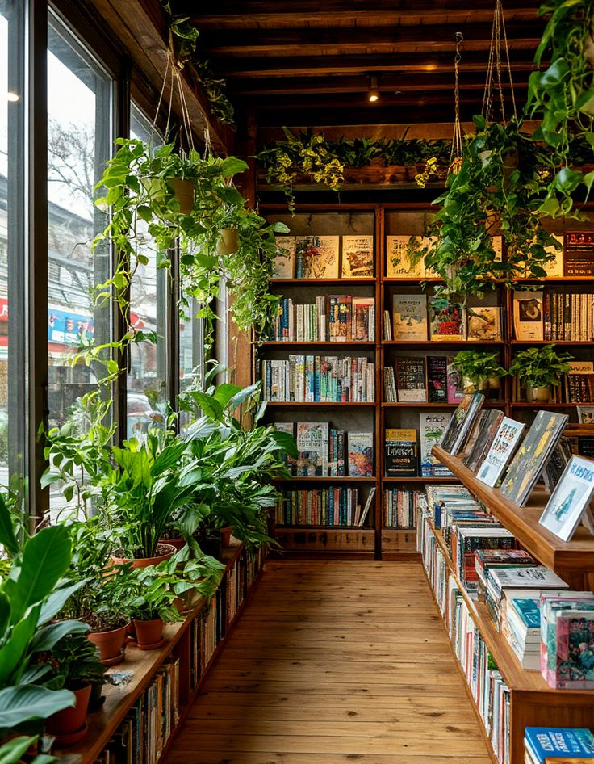
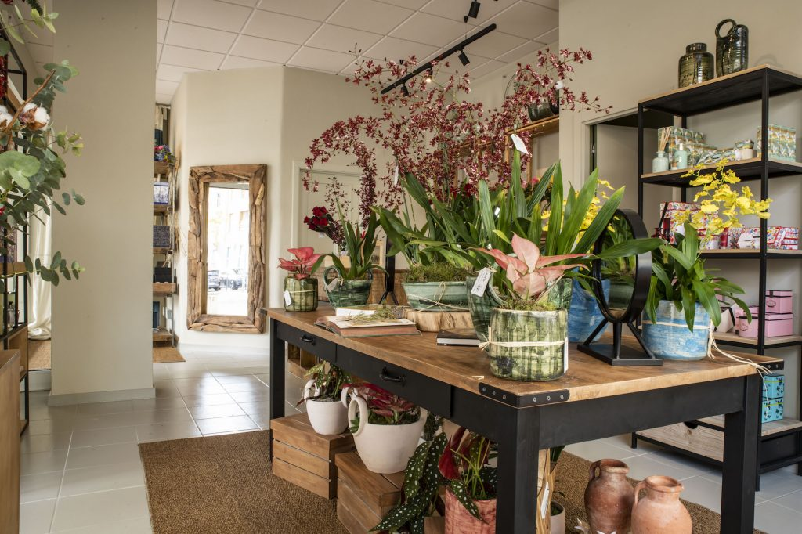

Onde as histórias ganham vida e a natureza floresce.
Bem-vindo à Mil Folhas. No coração da nossa loja, o aroma dos livros novos cruza-se com a frescura das flores naturais. Criámos um refúgio para os amantes da literatura e da botânica, onde cada canto esconde uma nova descoberta.
Explorar a Livraria

A nossa seleção botânica
Trazemos a natureza para mais perto de si. Desde plantas de interior que purificam o ar até arranjos florais exclusivos e personalizados, o nosso espaço verde foi pensado para dar vida e harmonia a qualquer ambiente.
Ver Catálogo de PlantasCom raízes no coração do Porto
A Mil Folhas não é apenas um espaço comercial, é um reflexo vivo da cidade que nos acolhe. Inspiramo-nos na luz inconfundível do rio Douro, na arquitetura histórica das nossas ruas e na alma cultural portuense para criar um refúgio autêntico na Rua de Cedofeita.


Visite-nos e descubra um pedaço de tranquilidade no meio da azáfama da Invicta.
Como Chegar